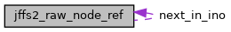

|
RTEMS
5.0.0
|
|
RTEMS
5.0.0
|
#include <nodelist.h>

Data Fields | |
| struct jffs2_raw_node_ref * | next_in_ino |
| uint32_t | flash_offset |
Definition at line 82 of file nodelist.h.
| uint32_t jffs2_raw_node_ref::flash_offset |
Definition at line 88 of file nodelist.h.
Referenced by jffs2_free_jeb_node_refs(), jffs2_free_raw_node_refs(), jffs2_link_node_ref(), jffs2_mark_node_obsolete(), and jffs2_prealloc_raw_node_refs().
| struct jffs2_raw_node_ref* jffs2_raw_node_ref::next_in_ino |
Definition at line 84 of file nodelist.h.
Referenced by jffs2_free_jeb_node_refs(), and jffs2_link_node_ref().
 1.8.17
1.8.17